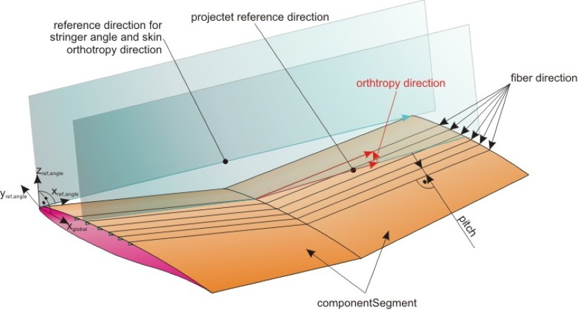
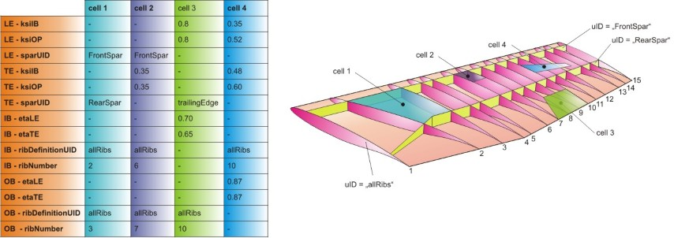

complexType · extension complexBaseType · all
Definition of the cell of the intermediateStructure
IntermediateStructure:
It defines the filling materials between the upper and lower shell (e.g. honeycombe structures in a smeared representation). IntermediateStructure is optional.The position of the intermediateStructure is defined in so called cells (= special areas on the wing). Default is no intermediateStructure.
Material Definition of intermediateStructure:
The material of the intermediateStructure is reference by 'material'. The material orientation is defined by 'rotX' and 'rotZ'. 'rotZ' is defined equivalent to the stringer angle resp. the skin orthotropyDirection. 'rotX' equals a positive rotation around the wings x-axis, while a rotation of zero is equivalent to the wing middle plane.
A picture to clarify the reference direction of rotZ (equivalent to orthothropy direction of the wing) can be found in the picture below:

Position definition by using cells:
A cell defines a special region of the wing. Within this region the cell properties are defined. In general a cell is defined by defining four borders – the cell leading and trailing edge and the inner border and the outer border. Those borders can either be defined by using eta/xsi coordinates or by referencing to spars and ribs. Mixed definitions (e.g. forward border is defined due to a spar, side borders due to eta coordinates) is allowed. In general a cell is quadrilateral. But if e.g. the spar, which is used for the definition of the trailing edge, has a kink, the cell can have more than four corners.
The cell leading and trailing edge (= forward and rear border) can either be defined by referencing to a spar (->sparUID) or by the defining the xsi (=relative chord) coordinates of the border (xsi1 = inner end; xsi2 = outer end).
The cell inner and outer border can either be defined by referencing to a rib (->ribDefinitionUID and ribNumber) or by the defining the eta (=relative spanwise) coordinates of the border (eta1 = forward end; eta2 = rear end).
Some examples for wing cells can be found in the picture below:

| Name | Type | Constraints | Use | Default | Description |
|---|---|---|---|---|---|
@externalDataDirectory | xsd:string | optional | Directory of the external data file | ||
@externalDataNodePath | xsd:string | optional | Path of the node inside the external data file | ||
@externalFileName | xsd:string | optional | Name of the external data file | ||
@uID | xsd:ID | required | UID |
| Name | Type | Constraints | OccurrenceHow often the element may appear at this place. The schema writes it as minOccurs and maxOccurs on the declaration. | Default | Description |
|---|---|---|---|---|---|
| allThe children below may appear in any order. Each may appear at most once. | |||||
positioningLeadingEdge | cellPositioningChordwiseType | [1..1] required | Chordwise position of the leading edge border of the cell | ||
positioningTrailingEdge | cellPositioningChordwiseType | [1..1] required | Chordwise position of the trailing edge border of the cell | ||
positioningInnerBorder | cellPositioningSpanwiseType | [1..1] required | Spanwise position of the inner border of the cell | ||
positioningOuterBorder | cellPositioningSpanwiseType | [1..1] required | Spanwise position of the outer border of the cell | ||
material | materialDefinitionType | [1..1] required | Reference to the material | ||
rotX | doubleBaseType | [1..1] required | 'rotX' equals a positive rotation around the wings x-axis, while a rotation of zero is equivalent to the wing middle plane direction | ||
rotZ | doubleBaseType | [1..1] required | 'rotZ' is defined equivalent to the stringer angle resp. the skin orthotropyDirection | ||
cpacs/vehicles/aircraft/model/wings/wing/componentSegments/componentSegment/structure/intermediateStructure/cellcpacs/vehicles/aircraft/model/wings/wing/componentSegments/componentSegment/controlSurfaces/leadingEdgeDevices/leadingEdgeDevice/structure/intermediateStructure/cellcpacs/vehicles/aircraft/model/wings/wing/componentSegments/componentSegment/controlSurfaces/trailingEdgeDevices/trailingEdgeDevice/structure/intermediateStructure/cellcpacs/vehicles/aircraft/model/wings/wing/componentSegments/componentSegment/controlSurfaces/spoilers/spoiler/structure/intermediateStructure/cellcpacs/vehicles/rotorcraft/model/wings/wing/componentSegments/componentSegment/structure/intermediateStructure/cellcpacs/vehicles/rotorcraft/model/wings/wing/componentSegments/componentSegment/controlSurfaces/leadingEdgeDevices/leadingEdgeDevice/structure/intermediateStructure/cellcpacs/vehicles/rotorcraft/model/wings/wing/componentSegments/componentSegment/controlSurfaces/trailingEdgeDevices/trailingEdgeDevice/structure/intermediateStructure/cellcpacs/vehicles/rotorcraft/model/wings/wing/componentSegments/componentSegment/controlSurfaces/spoilers/spoiler/structure/intermediateStructure/cellcpacs/vehicles/rotorcraft/model/rotorBlades/rotorBlade/componentSegments/componentSegment/structure/intermediateStructure/cellcpacs/vehicles/rotorcraft/model/rotorBlades/rotorBlade/componentSegments/componentSegment/controlSurfaces/leadingEdgeDevices/leadingEdgeDevice/structure/intermediateStructure/cellcpacs/vehicles/rotorcraft/model/rotorBlades/rotorBlade/componentSegments/componentSegment/controlSurfaces/trailingEdgeDevices/trailingEdgeDevice/structure/intermediateStructure/cellcpacs/vehicles/rotorcraft/model/rotorBlades/rotorBlade/componentSegments/componentSegment/controlSurfaces/spoilers/spoiler/structure/intermediateStructure/cell| Type | Name |
|---|---|
wingIntermediateStructureCellsType | cell |